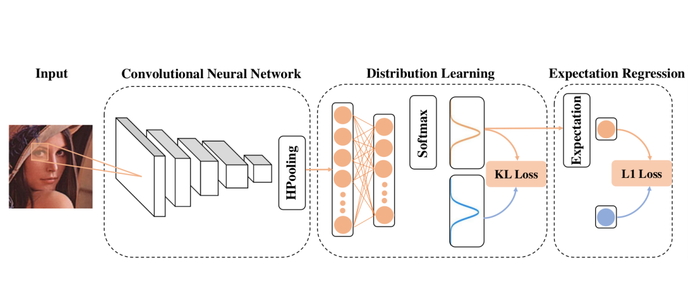

|
|
Bio
- I am a researcher at Tencent. I recently graduated from Nanjing University with outstanding thesis award. My supervisor is Professor.Jianxin Wu.
- I am interested in algorithms for computer vision and deep learning. Nowadays, I have focused on object detection (both 2D and 3D), where I have been trying to improve the efficiency and generalization of modern detectors. Besides, I also hold interests in medical image processing, fine-grained classification problems and vision approaches in remote sensing.
Recent News
- [2018/12/14] Our paper titled "When Semi-Supervised Learning Meets Transfer Learning: Training Strategies, Models and Datasets" is online. Code is also available at link.
- [2018/05/01] One paper titled "ThiNet: Pruning CNN Filters for a Thinner Net" is accepted by T-PAMI which is mainly about model compression. Here is the link to the project.
- [2018/05/01] Released light-weight pretrained models for Age Estimation which also achieved the best results to the best of our knowlege. The project page is here.
- [2018/04/18] We released one paper about improving context aggregation for Semantic Segmentation.
- [2018/04/17] One paper accepted by IJCAI-ECAI 2018.
- [2017/10/22] Attended ICCV 2017 held in Venice, Italy.
- [2017/09/22] We released on paper about using Recurrent Neural Networks to translate code snippet to its comment.
Projects and Publications
 |
Hong-Yu Zhou, Avital Oliver, Jianxin Wu, and Yefeng Zheng When Semi-Supervised Learning Meets Transfer Learning: Training Strategies, Models and Datasets arXiv, 2018. [PDF][code] |
| Jian-Hao Luo, Hao Zhang, Hong-Yu Zhou, Chen-Wei Xie, Jianxin Wu, and Weiyao Lin ThiNet: Pruning CNN Filters for a Thinner Net. IEEE Transactions on Pattern Analysis and Machine Intelligence (TPAMI). [PDF] [Project] | |
 |
Chen-Wei Xie, Hong-Yu Zhou, and Jianxin Wu Vortex Pooling: Improving Context Representation in Semantic Segmentation. arXiv:1804.06242, 2018. [PDF] |
|  | Bin-Bin Gao, Hong-Yu Zhou, Jianxin Wu, and Xin Geng Age Estimation Using Expectation of Label Distribution Learning. The 27th International Joint Conference on Artificial Intelligence and the 23rd European Conference on Artificial Intelligence (IJCAI-ECAI), 2018. [Project] |
 |
Wen-Hao Zheng, Hong-Yu Zhou, Ming Li, and Jianxin Wu Code Attention: Translating Code to Comments by Exploiting Domain Features Frontiers of Computer Science [PDF] |
| Hong-Yu Zhou, Bin-Bin Gao, and Jianxin Wu Adaptive Feeding: Achieving Fast and Accurate Detections by Adaptively Combining Object Detectors The IEEE International Conference on Computer Vision (ICCV), 2017. [PDF][Project][Demo] | |
 |
Hong-Yu Zhou, Bin-Bin Gao, and Jianxin Wu Sunrise or Sunset: Selective Comparison Learning for Subtle Attribute Recognition The 28th British Machine Vision Conference (BMVC), 2017. [PDF][Dataset (2.12G)][Project] |
 |
Hong-Yu Zhou and Jianxin Wu Content-Based Image Recovery The 2017 Pacific-Rim Conference on Multimedia (PCM), 2017. [PDF] |
Academic activities
- Conference reviewer for NIPS'16, AAAI'18.